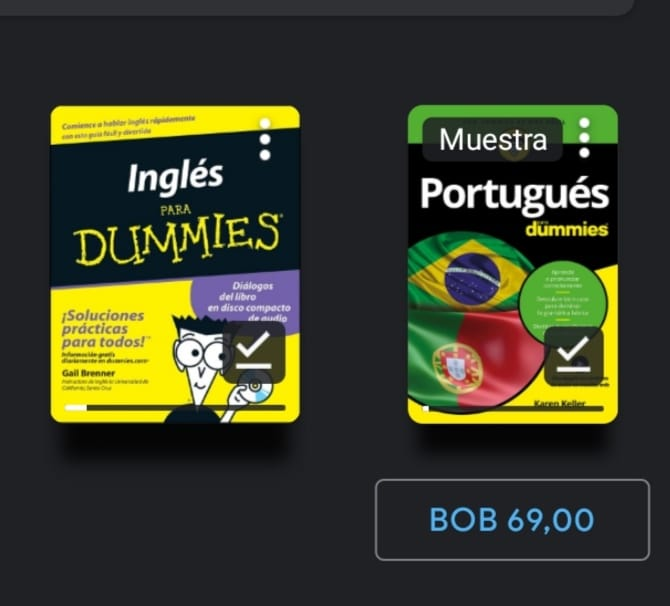

jugar futbol con mis hermanos, mis primos o mis amigos. ahora ya es medio complicado porque todos estan muy apartados.
jugar videojuegos, en modo cooperativo es mas divertido o ayudando a mis hermanos o primos a pasar alguna zona. Conoci el gaming por un polistation que tenia un primo y de ahi empeze con varios juegos, muy común es gracias a la pirateria que pude disfrutar varios juegos pero ahora busco una licencia windows original.
leer y buscar libros que sean buenos e interezantes, los libros son como las comidas donde algunos son muy buenos y otros son comida chatarra que no influyen mucho y son repetitivos. Los libros en fisico son buenos pero los digitales se estan llenando en mi biblioteca virtual donde son mas baratos y tiene modo oscuro que ayuda la vista
Encontrar blogs o páginas que tienen infomacion valiosa, algunas paginas en ingles me han ayudado en varios temas de aprendisaje y otras cuentan anécdotas muy buenas.
Aprender ingles, porque me di cuenta que te hace la vida mas comoda y no solo aprender por profesionalismo.
ver peliculas, pero me aburrio porque cada ves esperar a la tv un horario era aburido pero ahora con el internet ya no hay mucha emoción a la hora de ver una película, lo mismo con las series que me aburrieron a la mitad y los mangas que se leen mas rapido.